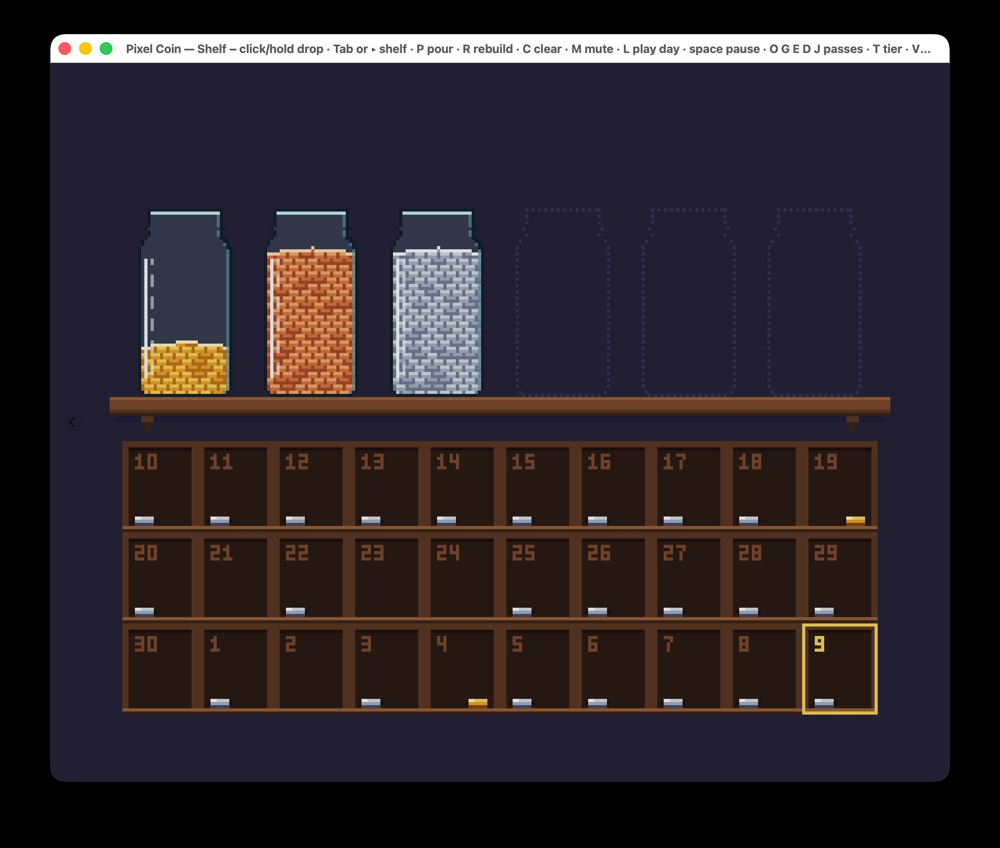

Most beginners believe that building for a market trend is the safe bet. Make the app everyone seems to want, and at least you'll have a chance. I believed it too. For weeks my question was: should I make the app everyone likes, or the one I like?
My answer now: for a developer new to apps, building for a market trend isn't the safe bet it looks like. Most apps earn little either way, and the one you build for your own daily use is the one you'll keep improving.
I watched Jonathan Blow (Braid, The Witness) and Edmund McMillen (Super Meat Boy, The Binding of Isaac) talk about why they make games for themselves. One line stuck:
"I would rather make a game that is a very small number of people's favorite game of all time than a game that a lot of people think is pretty okay."
They make fun of the alternative, designing "for 15-to-19-year-olds who like… Avatar
or something." "What does that even mean?" Blow asks. "I guess you just look at other games and copy them."
That's good advice from two famous developers. But they're famous because they succeeded. So I went looking for what happens to everyone else.
I'm building Time-Cost-Averaging, an app for investing time in a few skills. You pick a skill, start a 25-minute focus session, and the app keeps count of how much time you've put into each one. The name comes from dollar-cost averaging, the investing habit of putting in a fixed amount on a regular schedule instead of trying to time the market. A timing app usually looks like a dashboard: a countdown, charts, totals, lots of text.
Mine has none of that. It's a game in the clothes of an app, drawn in pixel art, with no text instructions:

The shelf makes it more than decoration. Once it's full, you have to cash jars in to make room for the next one, and every exchange pays you back: the gold piles up in the day's cell, with an animation and the sound of coins falling. A hard limit with a reward like that is what turns it into a game. And the fixed shelf is the same idea as my last post: your day has limited hours, so you can't keep adding goals. The shelf just makes it visible.
I like gold coins. I like watching them pile up and hearing them fall. That's my taste, and a few friends say they share it.
If the market path were safer, trend-following apps should earn more often. I couldn't find numbers that compare the two paths directly. What I found, for apps and games alike, is the same steep long tail: mostly, nothing earns.
App Store data is older and patchier, but it shows that tail (Perry, 2015). Steam's numbers are newer: the median game released in 2019 earned $1,136 in its lifetime, before Steam's cut (Zukowski, 2022, using Video Games Insights data). Only about 1 in 10 passed $200,000.
"Make it for yourself" doesn't escape those odds either. Where the Water Tastes Like Wine took four years of creative work and sold fewer copies than its developer had Twitter followers (CGMagazine, 2018). Boomzap's CEO said of Last Regiment: "There's a very small, very vocal audience that really loved that game, and nobody else in the world wanted it" (PocketGamer.biz, 2021). That's Blow's "small number of people's favorite", without the sales.
So I have no evidence that building for yourself sells better. But I have none that the market path does either. Almost everything earns little, so sales can't be the reason to pick the "safe" path. Something else has to decide.
Here's what the personal path gives you that the market path doesn't: one user who shows up every day.
I invest time in several skills, and I need to see how much I've put in, with quick feedback when I do: the coin drops. Because I need that feedback, I notice the moment it's missing or feels wrong. Then I fix it. Use, notice, fix, use again.
A developer building for an imagined "15-to-19-year-old" has to guess what's missing. I just have to open the app. I think that loop is why a developer who builds for their own daily use is more likely to keep improving the app. The evidence so far is one person: me. The app logs every session, so in a few weeks I'll know whether I really use it every day or just think I do.
A pixel-style jar of falling coins doesn't look like the other timing apps on an iPhone. That's the point Blow and McMillen make: when everyone builds what they think the market wants, everything looks the same, so a personal app stands out.
But standing out doesn't mean being found. Plenty of distinctive games sold a few thousand copies.
The bigger risk is my choice to skip text instructions. I want people to discover the exchange on their own, with small hints. That only works if the metaphors are common knowledge, not my private habits. Everyone knows coins, jars and a full shelf. Blow did something similar in The Witness: there is "no text or dialogue directly explaining a puzzle's rules"; the puzzles teach them. I still have to test it, though, by handing the app to a few people, saying nothing, and watching.
I'm not a typical beginner. I'm new to apps and games, but I was a backend developer. I already know how to finish software. If you've never shipped anything, the loop still helps, but you have more to learn before it starts turning.
I need this to earn money. It's not a hobby. Everything above says which path, not that either one pays. Odds are, no first app does. Blow and McMillen say an audience builds over "a few games". You keep showing people what you make "until you gather enough people to make it work."
If you're shelving your own idea to chase what seems safe, you're giving up the one user and the motivation you're sure to have, for sales odds that are about the same either way.
It's worth considering building the thing you'd open every day, using metaphors other people already understand. And plan for more than one app.
Or, as McMillen jokes at the end of the conversation: "Stay home and make some cool stuff."